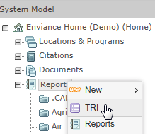
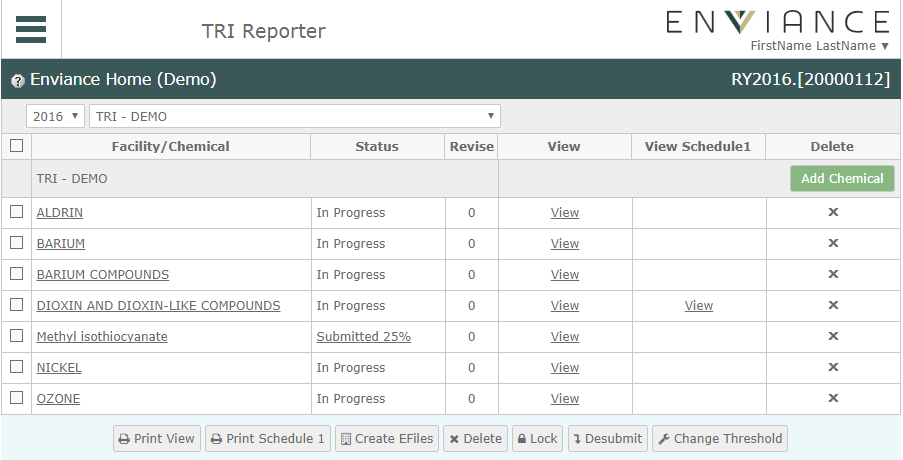

You can access TRI Reporter directly by url, or from the Management System by choosing the TRI option when you right click on Reports in the system model tree.

When you open the TRI Report module, the TRI Web Home page shows the existing FormR chemicals for the current reporting year and facility. You can select a reporting year and a facility at the top of the page.
If no chemicals are listed under a facility, then the facility does not yet have any TRI reports for the year.

Note: If you have access to more than one customer system model, you can change system models using the Change System link at the top of the page.
If you are just starting this year's FormR reporting, you can start by copying last year's data or by transferring data from the Management System. You can do this for all facilities at once, or by each facility individually.
From the home page you can: